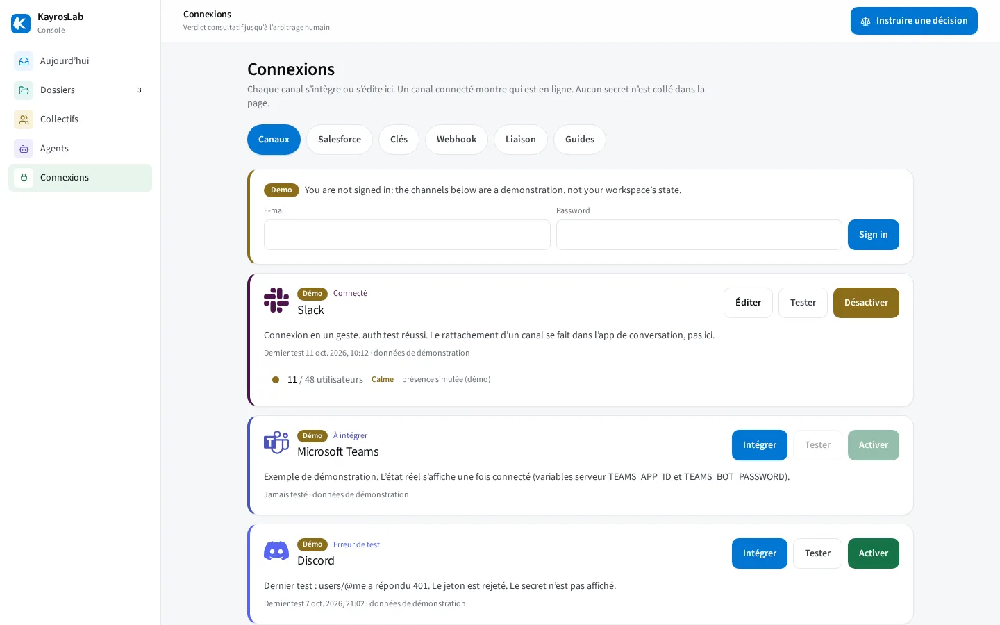

Start self-service in the console, or bring the same governed deliberation into the channels your operators use daily.
Self-service workspace: connect a channel, compose a collective, ask the real question, arbitrate the verdict.
Pressure-test proposals and RFPs against a simulated stakeholder panel — always labelled as simulation, never as a real quote.
Building agents or integrating the engine? For technical teams →
As soon as an opportunity reaches the Proposal stage, a collective of finance, legal and engineering agents reviews it. Your reps find the verdict, risks and conditions in the opportunity's activity — and the final call stays human.
Risk: no reversibility clause.
Condition: approve the security annex before signing.
Full dossier and arbitration →Arbitrated by a human in the console, conditions attached.
It reaches the trigger stage — Proposal/Price Quote by default, configurable.
n8n or Zapier launches a mission on your collective — one review per opportunity and stage.
“Verdict” task: GO, CONDITIONAL GO or NO GO, score, risks, conditions and a dossier link.
Your arbitration in the console comes back as a “Decision” task on the opportunity.
Two ready-to-import workflows, with no change to your Salesforce data model.
Every exchange is authenticated, signed, and safe to retry without duplicates.
A question asked in Slack, Teams or Discord goes to the collective, which answers in the channel. Your decision makers approve, request a revision or reject in one click — with the same traceability as in the console.
@KayrosLab should we renew Example Inc. on the proposed terms?
Arbitration required — Example Inc. renewal
What does the collective think of the Example Inc. renewal?
Arbitration required — Example Inc. renewal
/kayros question: do we commit to the Example Inc. offer?
Arbitration required — Example Inc. renewal
/kayros and your question, in any channel of the server.Illustrations — fictitious conversations. Rejecting or revising always opens a reason form.
In Settings: Slack OAuth, Teams admin consent, Discord bot invite. Secrets encrypted server-side, connectivity test included.
Rights come from the KayrosLab account linked through a single-use token — being a chat admin grants no arbitration right.
HMAC signature for Slack, Bot Framework JWT for Teams, Ed25519 signature for Discord, replay protection beyond 5 minutes.
Rejecting or revising requires a reason, timestamped and kept in the audit trail. A double click on “Approve” never arbitrates twice.
Chat speeds things up; the console stays the reference. Everything remains doable in the console, and an unavailable channel never blocks the process.
Connect a channel